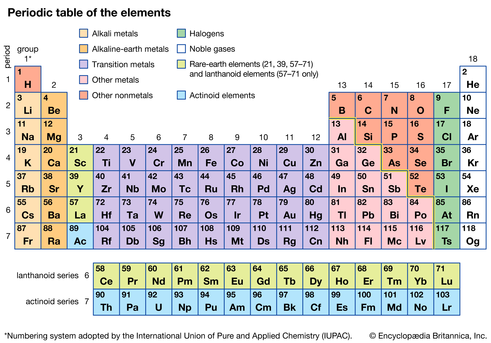

Chemistry is the scientific study of the properties and behavior of matter. It is a natural science that covers the elements that make up matter to the compounds composed of atoms, molecules and ions: their composition, structure, properties, behavior and the changes they undergo during a reaction with other substances.
The current model of atomic structure is the quantum mechanical model.Traditional chemistry starts with the study of elementary particles, atoms, molecules, substances, metals, crystals and other aggregates of matter. Matter can be studied in solid, liquid, gas and plasma states, in isolation or in combination. The interactions, reactions and transformations that are studied in chemistry are usually the result of interactions between atoms, leading to rearrangements of the chemical bonds which hold atoms together. Such behaviors are studied in a chemistry laboratory. The chemistry laboratory stereotypically uses various forms of laboratory glassware. However glassware is not cent ral to chemistry, and a great deal of experimental (as well as applied/industrial) chemistry is done without it Solutions of substances in reagent bottles, including ammonium hydroxide and nitric acid, illuminated in different colors A chemical reaction is a transformation of some substances into one or more different substances. The basis of such a chemical transformation is the rearrangement of electrons in the chemical bonds between atoms. It can be symbolically depicted through a chemical equation, which usually involves atoms as subjects. The number of atoms on the left and the right in the equation for a chemical transformation is equal. (When the number of atoms on either side is unequal, the transformation is referred to as a nuclear reaction or radioactive decay.) The type of chemical reactions a substance may undergo and the energy changes that may accompany it are constrained by certain basic rules, known as chemical laws. Energy and entropy considerations are invariably important in almost all chemical studies. Chemical substances are classified in terms of their structure, phase, as well as their chemical compositions. They can be analyzed using the tools of chemical analysis, e.g. spectroscopy and chromatography. Scientists engaged in chemical research are known as chemists. Most chemists specialize in one or more sub-disciplines.
